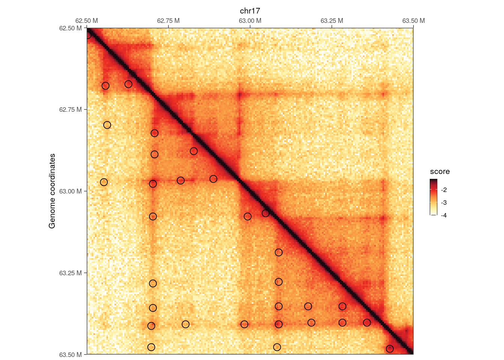

library(dplyr)
##
## Attaching package: 'dplyr'
## The following objects are masked from 'package:stats':
##
## filter, lag
## The following objects are masked from 'package:base':
##
## intersect, setdiff, setequal, union
library(ggplot2)
library(GenomicRanges)
## Loading required package: stats4
## Loading required package: BiocGenerics
##
## Attaching package: 'BiocGenerics'
## The following objects are masked from 'package:dplyr':
##
## combine, intersect, setdiff, union
## The following objects are masked from 'package:stats':
##
## IQR, mad, sd, var, xtabs
## The following objects are masked from 'package:base':
##
## Filter, Find, Map, Position, Reduce, anyDuplicated, aperm,
## append, as.data.frame, basename, cbind, colnames, dirname,
## do.call, duplicated, eval, evalq, get, grep, grepl, intersect,
## is.unsorted, lapply, mapply, match, mget, order, paste, pmax,
## pmax.int, pmin, pmin.int, rank, rbind, rownames, sapply,
## setdiff, table, tapply, union, unique, unsplit, which.max,
## which.min
## Loading required package: S4Vectors
##
## Attaching package: 'S4Vectors'
## The following objects are masked from 'package:dplyr':
##
## first, rename
## The following object is masked from 'package:utils':
##
## findMatches
## The following objects are masked from 'package:base':
##
## I, expand.grid, unname
## Loading required package: IRanges
##
## Attaching package: 'IRanges'
## The following objects are masked from 'package:dplyr':
##
## collapse, desc, slice
## Loading required package: GenomeInfoDb
library(InteractionSet)
## Loading required package: SummarizedExperiment
## Loading required package: MatrixGenerics
## Loading required package: matrixStats
##
## Attaching package: 'matrixStats'
## The following object is masked from 'package:dplyr':
##
## count
##
## Attaching package: 'MatrixGenerics'
## The following objects are masked from 'package:matrixStats':
##
## colAlls, colAnyNAs, colAnys, colAvgsPerRowSet, colCollapse,
## colCounts, colCummaxs, colCummins, colCumprods, colCumsums,
## colDiffs, colIQRDiffs, colIQRs, colLogSumExps, colMadDiffs,
## colMads, colMaxs, colMeans2, colMedians, colMins, colOrderStats,
## colProds, colQuantiles, colRanges, colRanks, colSdDiffs, colSds,
## colSums2, colTabulates, colVarDiffs, colVars, colWeightedMads,
## colWeightedMeans, colWeightedMedians, colWeightedSds,
## colWeightedVars, rowAlls, rowAnyNAs, rowAnys, rowAvgsPerColSet,
## rowCollapse, rowCounts, rowCummaxs, rowCummins, rowCumprods,
## rowCumsums, rowDiffs, rowIQRDiffs, rowIQRs, rowLogSumExps,
## rowMadDiffs, rowMads, rowMaxs, rowMeans2, rowMedians, rowMins,
## rowOrderStats, rowProds, rowQuantiles, rowRanges, rowRanks,
## rowSdDiffs, rowSds, rowSums2, rowTabulates, rowVarDiffs,
## rowVars, rowWeightedMads, rowWeightedMeans, rowWeightedMedians,
## rowWeightedSds, rowWeightedVars
## Loading required package: Biobase
## Welcome to Bioconductor
##
## Vignettes contain introductory material; view with
## 'browseVignettes()'. To cite Bioconductor, see
## 'citation("Biobase")', and for packages 'citation("pkgname")'.
##
## Attaching package: 'Biobase'
## The following object is masked from 'package:MatrixGenerics':
##
## rowMedians
## The following objects are masked from 'package:matrixStats':
##
## anyMissing, rowMedians
library(HiCExperiment)
## Consider using the `HiContacts` package to perform advanced genomic operations
## on `HiCExperiment` objects.
##
## Read "Orchestrating Hi-C analysis with Bioconductor" online book to learn more:
## https://js2264.github.io/OHCA/
##
## Attaching package: 'HiCExperiment'
## The following object is masked from 'package:SummarizedExperiment':
##
## metadata<-
## The following object is masked from 'package:S4Vectors':
##
## metadata<-
## The following object is masked from 'package:ggplot2':
##
## resolution
library(HiContactsData)
## Loading required package: ExperimentHub
## Loading required package: AnnotationHub
## Loading required package: BiocFileCache
## Loading required package: dbplyr
##
## Attaching package: 'dbplyr'
## The following objects are masked from 'package:dplyr':
##
## ident, sql
##
## Attaching package: 'AnnotationHub'
## The following object is masked from 'package:Biobase':
##
## cache
library(fourDNData)
library(HiContacts)
## Registered S3 methods overwritten by 'readr':
## method from
## as.data.frame.spec_tbl_df vroom
## as_tibble.spec_tbl_df vroom
## format.col_spec vroom
## print.col_spec vroom
## print.collector vroom
## print.date_names vroom
## print.locale vroom
## str.col_spec vroom
library(rtracklayer)
##
## Attaching package: 'rtracklayer'
## The following object is masked from 'package:AnnotationHub':
##
## hubUrl
library(OHCA)7 Finding topological features in Hi-C
Pre-loading packages and objects 📦
Aims
This chapter focuses on the annotation of topological features from Hi-C contact maps, including:
- Chromosome compartments
- Topologically associating domains
- Stable chromatin loops
7.1 Chromosome compartments
Chromosome compartments refer to the segregation of the chromatin into active euchromatin (A compartments) and regulated heterochromatin (B compartment).
7.1.1 Importing Hi-C data
To investigate chromosome compartments, we will fetch a contact matrix generated from a micro-C experiment (from Krietenstein et al. (2020)). A subset of the genome-wide dataset is provided in the HiContactsData package. It contains intra-chromosomal interactions within chr17, binned at 5000, 100000 and 250000 bp.
library(HiCExperiment)
library(HiContactsData)
cf <- CoolFile(HiContactsData('microC', 'mcool'))
## see ?HiContactsData and browseVignettes('HiContactsData') for documentation
## downloading 1 resources
## retrieving 1 resource
## loading from cache
microC <- import(cf, resolution = 250000)
microC
## `HiCExperiment` object with 10,086,710 contacts over 334 regions
## -------
## fileName: "/root/.cache/R/ExperimentHub/147f7f61e92b_8601"
## focus: "whole genome"
## resolutions(3): 5000 100000 250000
## active resolution: 250000
## interactions: 52755
## scores(2): count balanced
## topologicalFeatures: compartments(0) borders(0) loops(0) viewpoints(0)
## pairsFile: N/A
## metadata(0):
seqinfo(microC)
## Seqinfo object with 1 sequence from an unspecified genome:
## seqnames seqlengths isCircular genome
## chr17 83257441 NA <NA>7.1.2 Annotating A/B compartments
The consensus approach to annotate A/B compartments is to compute the eigenvectors of a Hi-C contact matrix and identify the eigenvector representing the chromosome-wide bi-partite segmentation of the genome.
The getCompartments() function performs several internal operations to achieve this:
- Obtains cis interactions per chromosome
- Computes O/E contact matrix scores
- Computes 3 first eigenvectors of this Hi-C contact matrix
- Normalizes eigenvectors
- Picks the eigenvector that has the greatest absolute correlation with a phasing track (e.g. a GC% track automatically computed from a genome reference sequence, or a gene density track)
- Signs this eigenvector so that positive values represent the A compartment
phasing_track <- BSgenome.Hsapiens.UCSC.hg38::BSgenome.Hsapiens.UCSC.hg38
microC_compts <- getCompartments(microC, genome = phasing_track)
## Going through preflight checklist...
## Parsing intra-chromosomal contacts for each chromosome...
## Computing eigenvectors for each chromosome...
microC_compts
## `HiCExperiment` object with 10,086,710 contacts over 334 regions
## -------
## fileName: "/root/.cache/R/ExperimentHub/147f7f61e92b_8601"
## focus: "whole genome"
## resolutions(3): 5000 100000 250000
## active resolution: 250000
## interactions: 52755
## scores(2): count balanced
## topologicalFeatures: compartments(41) borders(0) loops(0) viewpoints(0)
## pairsFile: N/A
## metadata(1): eigensgetCompartments() is an endomorphism: it returns the original object, enriched with two new pieces of information:
- A
compartmentstopologicalFeatures:
topologicalFeatures(microC_compts, "compartments")
## GRanges object with 41 ranges and 1 metadata column:
## seqnames ranges strand | compartment
## <Rle> <IRanges> <Rle> | <character>
## [1] chr17 250001-3000000 * | A
## [2] chr17 3000001-3500000 * | B
## [3] chr17 3500001-5500000 * | A
## [4] chr17 5500001-6500000 * | B
## [5] chr17 6500001-8500000 * | A
## ... ... ... ... . ...
## [37] chr17 72750001-73250000 * | A
## [38] chr17 73250001-74750000 * | B
## [39] chr17 74750001-79250000 * | A
## [40] chr17 79250001-79750000 * | B
## [41] chr17 79750001-83250000 * | A
## -------
## seqinfo: 1 sequence from an unspecified genome- The calculated eigenvectors stored in
metadata:
metadata(microC_compts)$eigens
## GRanges object with 334 ranges and 9 metadata columns:
## seqnames ranges strand |
## <Rle> <IRanges> <Rle> |
## chr17.chr17_1_250000 chr17 1-250000 * |
## chr17.chr17_250001_500000 chr17 250001-500000 * |
## chr17.chr17_500001_750000 chr17 500001-750000 * |
## chr17.chr17_750001_1000000 chr17 750001-1000000 * |
## chr17.chr17_1000001_1250000 chr17 1000001-1250000 * |
## ... ... ... ... .
## chr17.chr17_82250001_82500000 chr17 82250001-82500000 * |
## chr17.chr17_82500001_82750000 chr17 82500001-82750000 * |
## chr17.chr17_82750001_83000000 chr17 82750001-83000000 * |
## chr17.chr17_83000001_83250000 chr17 83000001-83250000 * |
## chr17.chr17_83250001_83257441 chr17 83250001-83257441 * |
## bin_id weight chr center
## <numeric> <numeric> <Rle> <integer>
## chr17.chr17_1_250000 0 NaN chr17 125000
## chr17.chr17_250001_500000 1 0.00626903 chr17 375000
## chr17.chr17_500001_750000 2 0.00567190 chr17 625000
## chr17.chr17_750001_1000000 3 0.00528588 chr17 875000
## chr17.chr17_1000001_1250000 4 0.00464628 chr17 1125000
## ... ... ... ... ...
## chr17.chr17_82250001_82500000 329 0.00463044 chr17 82375000
## chr17.chr17_82500001_82750000 330 0.00486910 chr17 82625000
## chr17.chr17_82750001_83000000 331 0.00561269 chr17 82875000
## chr17.chr17_83000001_83250000 332 0.00546433 chr17 83125000
## chr17.chr17_83250001_83257441 333 NaN chr17 83253721
## E1 E2 E3 phasing
## <numeric> <numeric> <numeric> <numeric>
## chr17.chr17_1_250000 0.000000 0.000000 0.000000 0.383084
## chr17.chr17_250001_500000 0.450991 0.653287 0.615300 0.433972
## chr17.chr17_500001_750000 0.716784 0.707461 0.845033 0.465556
## chr17.chr17_750001_1000000 0.904423 0.414952 0.864288 0.503592
## chr17.chr17_1000001_1250000 0.913023 0.266287 0.759016 0.547712
## ... ... ... ... ...
## chr17.chr17_82250001_82500000 1.147060 0.239112 1.133498 0.550872
## chr17.chr17_82500001_82750000 1.106937 0.419647 1.169464 0.513212
## chr17.chr17_82750001_83000000 0.818990 0.591955 0.850340 0.522432
## chr17.chr17_83000001_83250000 0.874038 0.503175 0.847926 0.528448
## chr17.chr17_83250001_83257441 0.000000 0.000000 0.000000 0.000000
## eigen
## <numeric>
## chr17.chr17_1_250000 0.000000
## chr17.chr17_250001_500000 0.450991
## chr17.chr17_500001_750000 0.716784
## chr17.chr17_750001_1000000 0.904423
## chr17.chr17_1000001_1250000 0.913023
## ... ...
## chr17.chr17_82250001_82500000 1.147060
## chr17.chr17_82500001_82750000 1.106937
## chr17.chr17_82750001_83000000 0.818990
## chr17.chr17_83000001_83250000 0.874038
## chr17.chr17_83250001_83257441 0.000000
## -------
## seqinfo: 1 sequence from an unspecified genome7.1.3 Exporting compartment tracks
To save the eigenvector (as a bigwig file) and the compartments(as a gff file), the export function can be used:
library(GenomicRanges)
library(rtracklayer)
coverage(metadata(microC_compts)$eigens, weight = 'eigen') |> export('microC_eigen.bw')
topologicalFeatures(microC_compts, "compartments") |> export('microC_compartments.gff3')7.1.4 Visualizing compartment tracks
Compartment tracks should be visualized in a dedicated genome browser, with the phasing track loaded as well, to ensure they are phased accordingly.
That being said, it is possible to visualize a genome track in R besides the matching Hi-C contact matrix.
library(ggplot2)
library(patchwork)
microC <- autocorrelate(microC)
##
p1 <- plotMatrix(microC, use.scores = 'autocorrelated', scale = 'linear', limits = c(-1, 1), caption = FALSE)
eigen <- coverage(metadata(microC_compts)$eigens, weight = 'eigen')[[1]]
eigen_df <- tibble(pos = cumsum(runLength(eigen)), eigen = runValue(eigen))
p2 <- ggplot(eigen_df, aes(x = pos, y = eigen)) +
geom_area() +
theme_void() +
coord_cartesian(expand = FALSE) +
labs(x = "Genomic position", y = "Eigenvector value")
wrap_plots(p1, p2, ncol = 1, heights = c(10, 1))
Here, we clearly note the concordance between the Hi-C correlation matrix, highlighting correlated interactions between pairs of genomic segments, and the eigenvector representing chromosome segmentation into 2 compartments: A (for positive values) and B (for negative values).
7.1.5 Saddle plots
Saddle plots are typically used to measure the observed vs. expected interaction scores within or between genomic loci belonging to A and B compartments.
Non-overlapping genomic windows are grouped in nbins quantiles (typically between 10 and 50 quantiles) according to their A/B compartment eigenvector value, from lowest eigenvector values (i.e. strongest B compartments) to highest eigenvector values (i.e. strongest A compartments). The average observed vs. expected interaction scores are then computed for pairwise eigenvector quantiles and plotted in a 2D heatmap.
library(BiocParallel)
plotSaddle(microC_compts, nbins = 25, BPPARAM = SerialParam(progressbar = FALSE))
Here, the top-left small corner represents average O/E scores between strong B compartments and the bottom-right larger corner represents average O/E scores between strong A compartments. Note that only chr17 interactions are contained in this dataset, explaining the grainy aspect of the saddle plot.
7.2 Topological domains
Topological domains (a.k.a. Topologically Associating Domains, TADs, isolated neighborhoods, contact domains, …) refer to local chromosomal segments (e.b. roughly ≤ 1Mb in mammal genomes) which preferentially self-interact, in a constrained manner. They are demarcated by domain boundaries.

They are generally conserved across cell types and species (Schmitt et al. (2016)), typically correlate with units of DNA replication (Pope et al. (2014)), and could play a role during development (Stadhouders et al. (2019)).
7.2.1 Computing diamond insulation score
Several approaches exist to annotate topological domains (Sefer (2022)). Several packages in R implement some of these functionalities, e.g. spectralTAD or TADcompare.
HiContacts offers a simple getDiamondInsulation function which computes the diamond insulation score (Crane et al. (2015)). This score quantifies average interaction frequency in an insulation window (of a certain window_size) sliding along contact matrices at a chosen resolution.
# - Compute insulation score
bpparam <- SerialParam(progressbar = FALSE)
hic <- zoom(microC, 5000) |>
refocus('chr17:60000001-83257441') |>
getDiamondInsulation(window_size = 100000, BPPARAM = bpparam) |>
getBorders()
## Going through preflight checklist...
## Scan each window and compute diamond insulation score...
## Annotating diamond score prominence for each window...
hic
## `HiCExperiment` object with 2,156,222 contacts over 4,652 regions
## -------
## fileName: "/root/.cache/R/ExperimentHub/147f7f61e92b_8601"
## focus: "chr17:60,000,001-83,257,441"
## resolutions(3): 5000 100000 250000
## active resolution: 5000
## interactions: 2156044
## scores(2): count balanced
## topologicalFeatures: compartments(0) borders(21) loops(0) viewpoints(0)
## pairsFile: N/A
## metadata(1): insulationgetDiamondInsulation() is an endomorphism: it returns the original object, enriched with two new pieces of information:
- A
borderstopologicalFeatures:
topologicalFeatures(hic, "borders")
## GRanges object with 21 ranges and 1 metadata column:
## seqnames ranges strand | score
## <Rle> <IRanges> <Rle> | <numeric>
## strong chr17 60105001-60110000 * | 0.574760
## weak chr17 60210001-60215000 * | 0.414425
## weak chr17 61415001-61420000 * | 0.346668
## strong chr17 61500001-61505000 * | 0.544336
## weak chr17 62930001-62935000 * | 0.399794
## ... ... ... ... . ...
## weak chr17 78395001-78400000 * | 0.235613
## weak chr17 79065001-79070000 * | 0.236535
## weak chr17 80155001-80160000 * | 0.284855
## weak chr17 81735001-81740000 * | 0.497478
## strong chr17 81840001-81845000 * | 1.395949
## -------
## seqinfo: 1 sequence from an unspecified genome- The calculated
insulationscores stored inmetadata:
metadata(hic)$insulation
## GRanges object with 4611 ranges and 8 metadata columns:
## seqnames ranges strand | bin_id
## <Rle> <IRanges> <Rle> | <numeric>
## chr17_60100001_60105000 chr17 60100001-60105000 * | 12020
## chr17_60105001_60110000 chr17 60105001-60110000 * | 12021
## chr17_60110001_60115000 chr17 60110001-60115000 * | 12022
## chr17_60115001_60120000 chr17 60115001-60120000 * | 12023
## chr17_60120001_60125000 chr17 60120001-60125000 * | 12024
## ... ... ... ... . ...
## chr17_83130001_83135000 chr17 83130001-83135000 * | 16626
## chr17_83135001_83140000 chr17 83135001-83140000 * | 16627
## chr17_83140001_83145000 chr17 83140001-83145000 * | 16628
## chr17_83145001_83150000 chr17 83145001-83150000 * | 16629
## chr17_83150001_83155000 chr17 83150001-83155000 * | 16630
## weight chr center score insulation
## <numeric> <Rle> <integer> <numeric> <numeric>
## chr17_60100001_60105000 0.0406489 chr17 60102500 0.188061 -0.750142
## chr17_60105001_60110000 0.0255539 chr17 60107500 0.180860 -0.806466
## chr17_60110001_60115000 NaN chr17 60112500 0.196579 -0.686232
## chr17_60115001_60120000 NaN chr17 60117500 0.216039 -0.550046
## chr17_60120001_60125000 NaN chr17 60122500 0.230035 -0.459489
## ... ... ... ... ... ...
## chr17_83130001_83135000 0.0314684 chr17 83132500 0.262191 -0.270723
## chr17_83135001_83140000 0.0307197 chr17 83137500 0.240779 -0.393632
## chr17_83140001_83145000 0.0322810 chr17 83142500 0.219113 -0.529664
## chr17_83145001_83150000 0.0280840 chr17 83147500 0.199645 -0.663900
## chr17_83150001_83155000 0.0272775 chr17 83152500 0.180434 -0.809873
## min prominence
## <logical> <numeric>
## chr17_60100001_60105000 FALSE NA
## chr17_60105001_60110000 TRUE 0.57476
## chr17_60110001_60115000 FALSE NA
## chr17_60115001_60120000 FALSE NA
## chr17_60120001_60125000 FALSE NA
## ... ... ...
## chr17_83130001_83135000 FALSE NA
## chr17_83135001_83140000 FALSE NA
## chr17_83140001_83145000 FALSE NA
## chr17_83145001_83150000 FALSE NA
## chr17_83150001_83155000 FALSE NA
## -------
## seqinfo: 1 sequence from an unspecified genome
Note
The getDiamondInsulation function can be parallelized over multiple threads by specifying the Bioconductor generic BPPARAM argument.
7.2.2 Exporting insulation scores tracks
To save the diamond insulation scores (as a bigwig file) and the borders (as a bed file), the export function can be used:
coverage(metadata(hic)$insulation, weight = 'insulation') |> export('microC_insulation.bw')
topologicalFeatures(hic, "borders") |> export('microC_borders.bed')7.2.3 Visualizing chromatin domains
Insulation tracks should be visualized in a dedicated genome browser.
That being said, it is possible to visualize a genome track in R besides the matching Hi-C contact matrix.
hic <- zoom(hic, 100000)
p1 <- plotMatrix(
hic,
use.scores = 'balanced',
limits = c(-3.5, -1),
borders = topologicalFeatures(hic, "borders"),
caption = FALSE
)
insulation <- coverage(metadata(hic)$insulation, weight = 'insulation')[[1]]
insulation_df <- tibble(pos = cumsum(runLength(insulation)), insulation = runValue(insulation))
p2 <- ggplot(insulation_df, aes(x = pos, y = insulation)) +
geom_area() +
theme_void() +
coord_cartesian(expand = FALSE) +
labs(x = "Genomic position", y = "Diamond insulation score")
wrap_plots(p1, p2, ncol = 1, heights = c(10, 1))
Local minima in the diamond insulation score displayed below the Hi-C contact matrix are identified using the getBorders() function, which automatically estimates a minimum threshold. These local minima correspond to borders and are visually depicted on the Hi-C map by blue diamonds.
7.3 Chromatin loops
7.3.1 chromosight
Chromatin loops, dots, or contacts, refer to a strong increase of interaction frequency between a pair of two genomic loci. They correspond to focal “dots” on a Hi-C map. Relying on computer vision algorithms, chromosight uses this property to annotate chromatin loops in a Hi-C map (Matthey-Doret et al. (2020)). chromosight is a standalone python package and is made available in R through the HiCool-managed conda environment with the getLoops() function.
Important note:
HiCool relies on basilisk R package to set up an underlying, self-managed python environment. Packages from this environment, including chromosight, are not yet available for ARM chips (e.g. M1/2/3 in newer on macbooks) or Windows. For this reason, HiCool-supported features are not available on these machines.
7.3.1.1 Identifying loops
## Due to HiCool limitations when rendering the book, this code is not executed here
hic <- HiCool::getLoops(microC, resolution = 5000)## Instead we load pre-computed data from a backed-up object
hic_rds <- system.file('extdata', 'microC_with-loops.rds', package = 'OHCA')
hic <- readRDS(hic_rds)hic
## `HiCExperiment` object with 2,103,634 contacts over 200 regions
## -------
## fileName: "../4d434d8538a0_4DNFI9FVHJZQ_subset.mcool"
## focus: "chr17:62,500,001-63,500,000"
## resolutions(1): 5000
## active resolution: 5000
## interactions: 19667
## scores(2): count balanced
## topologicalFeatures: loops(2419)
## pairsFile: N/A
## metadata(1): chromosight_argsgetLoops() is an endomorphism: it returns the original object, enriched with two new pieces of information:
- A
loopstopologicalFeatures:
topologicalFeatures(hic, "loops")
## GInteractions object with 2419 interactions and 7 metadata columns:
## seqnames1 ranges1 seqnames2 ranges2 |
## <Rle> <IRanges> <Rle> <IRanges> |
## [1] chr17 150000-155000 --- chr17 390000-395000 |
## [2] chr17 145000-150000 --- chr17 755000-760000 |
## [3] chr17 145000-150000 --- chr17 1050000-1055000 |
## [4] chr17 145000-150000 --- chr17 510000-515000 |
## [5] chr17 150000-155000 --- chr17 990000-995000 |
## ... ... ... ... ... ... .
## [2415] chr17 82870000-82875000 --- chr17 83075000-83080000 |
## [2416] chr17 82880000-82885000 --- chr17 82925000-82930000 |
## [2417] chr17 82960000-82965000 --- chr17 83080000-83085000 |
## [2418] chr17 82975000-82980000 --- chr17 83000000-83005000 |
## [2419] chr17 83100000-83105000 --- chr17 83200000-83205000 |
## bin1 bin2 kernel_id iteration score pvalue
## <numeric> <numeric> <numeric> <numeric> <numeric> <numeric>
## [1] 498194 498242 0 0 0.666651 0
## [2] 498193 498315 0 0 0.452903 0
## [3] 498193 498374 0 0 0.518936 0
## [4] 498193 498266 0 0 0.536020 0
## [5] 498194 498362 0 0 0.573763 0
## ... ... ... ... ... ... ...
## [2415] 514738 514779 0 0 0.478653 0.0e+00
## [2416] 514740 514749 0 0 0.369344 5.0e-10
## [2417] 514756 514780 0 0 0.690669 0.0e+00
## [2418] 514759 514764 0 0 0.374722 5.1e-09
## [2419] 514784 514804 0 0 0.768593 0.0e+00
## qvalue
## <numeric>
## [1] 0
## [2] 0
## [3] 0
## [4] 0
## [5] 0
## ... ...
## [2415] 0e+00
## [2416] 6e-10
## [2417] 0e+00
## [2418] 6e-09
## [2419] 0e+00
## -------
## regions: 3169 ranges and 0 metadata columns
## seqinfo: 1 sequence from an unspecified genome; no seqlengths- The arguments used by
chromosight, stored inmetadata:
metadata(hic)$chromosight_args
## $`--pattern`
## [1] "loops"
##
## $`--dump`
## [1] "/tmp/RtmpUN0slk"
##
## $`--inter`
## [1] FALSE
##
## $`--iterations`
## [1] "auto"
##
## $`--kernel-config`
## NULL
##
## $`--perc-zero`
## [1] "auto"
##
## $`--perc-undetected`
## [1] "auto"
##
## $`--tsvd`
## [1] FALSE
##
## $`--win-fmt`
## [1] "json"
##
## $`--win-size`
## [1] "auto"
##
## $`--no-plotting`
## [1] TRUE
##
## $`--smooth-trend`
## [1] FALSE
##
## $`--norm`
## [1] "auto"
##
## $`<contact_map>`
## [1] "/root/.cache/R/fourDNData/913914662_4DNFI9FVHJZQ.mcool::/resolutions/5000"
##
## $`--max-dist`
## [1] "auto"
##
## $`--min-dist`
## [1] "auto"
##
## $`--min-separation`
## [1] "auto"
##
## $`--n-mads`
## [1] 5
##
## $`<prefix>`
## [1] "chromosight/chromo"
##
## $`--pearson`
## [1] "auto"
##
## $`--subsample`
## [1] "no"
##
## $`--threads`
## [1] 17.3.1.2 Importing loops from files
If you are using chromosight directly from the terminal (i.e. outside R), you can import the annotated loops in R as follows:
## Change the `.tsv` file to the local output file from chromosight
loops <- system.file('extdata', 'chromo.tsv', package = 'OHCA') |>
readr::read_tsv() |>
plyinteractions::as_ginteractions(seqnames1 = chrom1, seqnames2 = chrom2)
## Rows: 2419 Columns: 13
## ── Column specification ─────────────────────────────────────────────────────
## Delimiter: "\t"
## chr (2): chrom1, chrom2
## dbl (11): start1, end1, start2, end2, bin1, bin2, kernel_id, iteration, s...
##
## ℹ Use `spec()` to retrieve the full column specification for this data.
## ℹ Specify the column types or set `show_col_types = FALSE` to quiet this message.
loops
## GInteractions object with 2419 interactions and 7 metadata columns:
## seqnames1 ranges1 strand1 seqnames2 ranges2
## <Rle> <IRanges> <Rle> <Rle> <IRanges>
## [1] chr17 150000-155000 * --- chr17 390000-395000
## [2] chr17 145000-150000 * --- chr17 755000-760000
## [3] chr17 145000-150000 * --- chr17 1050000-1055000
## [4] chr17 145000-150000 * --- chr17 510000-515000
## [5] chr17 150000-155000 * --- chr17 990000-995000
## ... ... ... ... ... ... ...
## [2415] chr17 82870000-82875000 * --- chr17 83075000-83080000
## [2416] chr17 82880000-82885000 * --- chr17 82925000-82930000
## [2417] chr17 82960000-82965000 * --- chr17 83080000-83085000
## [2418] chr17 82975000-82980000 * --- chr17 83000000-83005000
## [2419] chr17 83100000-83105000 * --- chr17 83200000-83205000
## strand2 | bin1 bin2 kernel_id iteration score
## <Rle> | <numeric> <numeric> <numeric> <numeric> <numeric>
## [1] * | 498194 498242 0 0 0.666651
## [2] * | 498193 498315 0 0 0.452903
## [3] * | 498193 498374 0 0 0.518936
## [4] * | 498193 498266 0 0 0.536020
## [5] * | 498194 498362 0 0 0.573763
## ... ... . ... ... ... ... ...
## [2415] * | 514738 514779 0 0 0.478653
## [2416] * | 514740 514749 0 0 0.369344
## [2417] * | 514756 514780 0 0 0.690669
## [2418] * | 514759 514764 0 0 0.374722
## [2419] * | 514784 514804 0 0 0.768593
## pvalue qvalue
## <numeric> <numeric>
## [1] 0 0
## [2] 0 0
## [3] 0 0
## [4] 0 0
## [5] 0 0
## ... ... ...
## [2415] 0.0e+00 0e+00
## [2416] 5.0e-10 6e-10
## [2417] 0.0e+00 0e+00
## [2418] 5.1e-09 6e-09
## [2419] 0.0e+00 0e+00
## -------
## regions: 3169 ranges and 0 metadata columns
## seqinfo: 1 sequence from an unspecified genome; no seqlengths7.3.1.3 Exporting chromatin loops
loops <- topologicalFeatures(hic, "loops")
loops <- loops[loops$score >= 0.4 & loops$qvalue <= 1e-6]
GenomicInteractions::export.bedpe(loops, 'loops.bedpe')
## Warning in interactionCounts(x): 'counts' not in mcols of object; will
## return NULL7.3.1.4 Visualizing chromatin loops
plotMatrix(
hic,
loops = loops,
limits = c(-4, -1.2),
caption = FALSE
)
7.3.2 Other R packages
A number of other R packages have been developed to identify focal chromatin loops, notably fitHiC (Ay et al. (2014)), GOTHiC (Mifsud et al. (2017)) or idr2d (Krismer et al. (2020)). Each fits a slightly different purpose, and we encourage the end user to read companion publications.
Session info
Click to expand 👇
sessioninfo::session_info(include_base = TRUE)
## ─ Session info ────────────────────────────────────────────────────────────
## setting value
## version R Under development (unstable) (2024-01-17 r85813)
## os Ubuntu 22.04.3 LTS
## system x86_64, linux-gnu
## ui X11
## language (EN)
## collate C
## ctype en_US.UTF-8
## tz Etc/UTC
## date 2024-01-22
## pandoc 3.1.1 @ /usr/local/bin/ (via rmarkdown)
##
## ─ Packages ────────────────────────────────────────────────────────────────
## package * version date (UTC) lib source
## abind 1.4-5 2016-07-21 [2] CRAN (R 4.4.0)
## AnnotationDbi 1.65.2 2023-11-03 [2] Bioconductor
## AnnotationFilter 1.27.0 2023-10-24 [2] Bioconductor
## AnnotationHub * 3.11.1 2023-12-11 [2] Bioconductor 3.19 (R 4.4.0)
## backports 1.4.1 2021-12-13 [2] CRAN (R 4.4.0)
## base * 4.4.0 2024-01-18 [3] local
## base64enc 0.1-3 2015-07-28 [2] CRAN (R 4.4.0)
## beeswarm 0.4.0 2021-06-01 [2] CRAN (R 4.4.0)
## Biobase * 2.63.0 2023-10-24 [2] Bioconductor
## BiocFileCache * 2.11.1 2023-10-26 [2] Bioconductor
## BiocGenerics * 0.49.1 2023-11-01 [2] Bioconductor
## BiocIO 1.13.0 2023-10-24 [2] Bioconductor
## BiocManager 1.30.22 2023-08-08 [2] CRAN (R 4.4.0)
## BiocParallel * 1.37.0 2023-10-24 [2] Bioconductor
## BiocVersion 3.19.1 2023-10-26 [2] Bioconductor
## biomaRt 2.59.0 2023-10-25 [2] Bioconductor
## Biostrings 2.71.1 2023-10-25 [2] Bioconductor
## biovizBase 1.51.0 2023-10-25 [2] Bioconductor
## bit 4.0.5 2022-11-15 [2] CRAN (R 4.4.0)
## bit64 4.0.5 2020-08-30 [2] CRAN (R 4.4.0)
## bitops 1.0-7 2021-04-24 [2] CRAN (R 4.4.0)
## blob 1.2.4 2023-03-17 [2] CRAN (R 4.4.0)
## BSgenome 1.71.1 2023-11-01 [2] Bioconductor
## BSgenome.Hsapiens.UCSC.hg38 1.4.5 2024-01-22 [2] Bioconductor
## cachem 1.0.8 2023-05-01 [2] CRAN (R 4.4.0)
## Cairo 1.6-2 2023-11-28 [2] CRAN (R 4.4.0)
## checkmate 2.3.1 2023-12-04 [2] CRAN (R 4.4.0)
## cli 3.6.2 2023-12-11 [2] CRAN (R 4.4.0)
## cluster 2.1.6 2023-12-01 [3] CRAN (R 4.4.0)
## codetools 0.2-19 2023-02-01 [3] CRAN (R 4.4.0)
## colorspace 2.1-0 2023-01-23 [2] CRAN (R 4.4.0)
## compiler 4.4.0 2024-01-18 [3] local
## crayon 1.5.2 2022-09-29 [2] CRAN (R 4.4.0)
## curl 5.2.0 2023-12-08 [2] CRAN (R 4.4.0)
## data.table 1.14.10 2023-12-08 [2] CRAN (R 4.4.0)
## datasets * 4.4.0 2024-01-18 [3] local
## DBI 1.2.1 2024-01-12 [2] CRAN (R 4.4.0)
## dbplyr * 2.4.0 2023-10-26 [2] CRAN (R 4.4.0)
## DelayedArray 0.29.0 2023-10-24 [2] Bioconductor
## deldir 2.0-2 2023-11-23 [2] CRAN (R 4.4.0)
## dichromat 2.0-0.1 2022-05-02 [2] CRAN (R 4.4.0)
## digest 0.6.34 2024-01-11 [2] CRAN (R 4.4.0)
## doParallel 1.0.17 2022-02-07 [2] CRAN (R 4.4.0)
## dplyr * 1.1.4 2023-11-17 [2] CRAN (R 4.4.0)
## dynamicTreeCut 1.63-1 2016-03-11 [2] CRAN (R 4.4.0)
## ensembldb 2.27.1 2023-11-20 [2] Bioconductor 3.19 (R 4.4.0)
## evaluate 0.23 2023-11-01 [2] CRAN (R 4.4.0)
## ExperimentHub * 2.11.1 2023-12-11 [2] Bioconductor 3.19 (R 4.4.0)
## fansi 1.0.6 2023-12-08 [2] CRAN (R 4.4.0)
## farver 2.1.1 2022-07-06 [2] CRAN (R 4.4.0)
## fastcluster 1.2.6 2024-01-12 [2] CRAN (R 4.4.0)
## fastmap 1.1.1 2023-02-24 [2] CRAN (R 4.4.0)
## filelock 1.0.3 2023-12-11 [2] CRAN (R 4.4.0)
## foreach 1.5.2 2022-02-02 [2] CRAN (R 4.4.0)
## foreign 0.8-86 2023-11-28 [3] CRAN (R 4.4.0)
## Formula 1.2-5 2023-02-24 [2] CRAN (R 4.4.0)
## fourDNData * 1.3.0 2023-10-31 [2] Bioconductor
## generics 0.1.3 2022-07-05 [2] CRAN (R 4.4.0)
## GenomeInfoDb * 1.39.5 2024-01-01 [2] Bioconductor 3.19 (R 4.4.0)
## GenomeInfoDbData 1.2.11 2024-01-22 [2] Bioconductor
## GenomicAlignments 1.39.2 2024-01-16 [2] Bioconductor 3.19 (R 4.4.0)
## GenomicFeatures 1.55.1 2023-10-29 [2] Bioconductor
## GenomicInteractions 1.37.0 2023-10-25 [2] Bioconductor
## GenomicRanges * 1.55.1 2023-10-29 [2] Bioconductor
## ggbeeswarm 0.7.2 2023-04-29 [2] CRAN (R 4.4.0)
## ggplot2 * 3.4.4 2023-10-12 [2] CRAN (R 4.4.0)
## ggrastr 1.0.2 2023-06-01 [2] CRAN (R 4.4.0)
## glue 1.7.0 2024-01-09 [2] CRAN (R 4.4.0)
## GO.db 3.18.0 2024-01-22 [2] Bioconductor
## graphics * 4.4.0 2024-01-18 [3] local
## grDevices * 4.4.0 2024-01-18 [3] local
## grid 4.4.0 2024-01-18 [3] local
## gridExtra 2.3 2017-09-09 [2] CRAN (R 4.4.0)
## gtable 0.3.4 2023-08-21 [2] CRAN (R 4.4.0)
## Gviz 1.47.1 2023-11-16 [2] Bioconductor 3.19 (R 4.4.0)
## HiCExperiment * 1.3.0 2023-10-24 [2] Bioconductor
## HiContacts * 1.5.0 2023-10-24 [2] Bioconductor
## HiContactsData * 1.5.3 2024-01-22 [2] Github (js2264/HiContactsData@d5bebe7)
## Hmisc 5.1-1 2023-09-12 [2] CRAN (R 4.4.0)
## hms 1.1.3 2023-03-21 [2] CRAN (R 4.4.0)
## htmlTable 2.4.2 2023-10-29 [2] CRAN (R 4.4.0)
## htmltools 0.5.7 2023-11-03 [2] CRAN (R 4.4.0)
## htmlwidgets 1.6.4 2023-12-06 [2] CRAN (R 4.4.0)
## httr 1.4.7 2023-08-15 [2] CRAN (R 4.4.0)
## igraph 1.6.0 2023-12-11 [2] CRAN (R 4.4.0)
## impute 1.77.0 2023-10-24 [2] Bioconductor
## InteractionSet * 1.31.0 2023-10-24 [2] Bioconductor
## interp 1.1-5 2023-11-27 [2] CRAN (R 4.4.0)
## IRanges * 2.37.1 2024-01-19 [2] Bioconductor 3.19 (R 4.4.0)
## iterators 1.0.14 2022-02-05 [2] CRAN (R 4.4.0)
## jpeg 0.1-10 2022-11-29 [2] CRAN (R 4.4.0)
## jsonlite 1.8.8 2023-12-04 [2] CRAN (R 4.4.0)
## KEGGREST 1.43.0 2023-10-24 [2] Bioconductor
## knitr 1.45 2023-10-30 [2] CRAN (R 4.4.0)
## labeling 0.4.3 2023-08-29 [2] CRAN (R 4.4.0)
## lattice 0.22-5 2023-10-24 [3] CRAN (R 4.4.0)
## latticeExtra 0.6-30 2022-07-04 [2] CRAN (R 4.4.0)
## lazyeval 0.2.2 2019-03-15 [2] CRAN (R 4.4.0)
## lifecycle 1.0.4 2023-11-07 [2] CRAN (R 4.4.0)
## magrittr 2.0.3 2022-03-30 [2] CRAN (R 4.4.0)
## Matrix 1.6-5 2024-01-11 [3] CRAN (R 4.4.0)
## MatrixGenerics * 1.15.0 2023-10-24 [2] Bioconductor
## matrixStats * 1.2.0 2023-12-11 [2] CRAN (R 4.4.0)
## memoise 2.0.1 2021-11-26 [2] CRAN (R 4.4.0)
## methods * 4.4.0 2024-01-18 [3] local
## mime 0.12 2021-09-28 [2] CRAN (R 4.4.0)
## munsell 0.5.0 2018-06-12 [2] CRAN (R 4.4.0)
## nnet 7.3-19 2023-05-03 [3] CRAN (R 4.4.0)
## OHCA * 0.99.7 2024-01-22 [1] Bioconductor
## parallel 4.4.0 2024-01-18 [3] local
## patchwork * 1.2.0 2024-01-08 [2] CRAN (R 4.4.0)
## pillar 1.9.0 2023-03-22 [2] CRAN (R 4.4.0)
## pkgconfig 2.0.3 2019-09-22 [2] CRAN (R 4.4.0)
## plyinteractions 1.1.0 2023-10-24 [2] Bioconductor
## plyranges 1.23.0 2023-10-24 [2] Bioconductor
## png 0.1-8 2022-11-29 [2] CRAN (R 4.4.0)
## preprocessCore 1.65.0 2023-10-24 [2] Bioconductor
## prettyunits 1.2.0 2023-09-24 [2] CRAN (R 4.4.0)
## progress 1.2.3 2023-12-06 [2] CRAN (R 4.4.0)
## ProtGenerics 1.35.1 2024-01-17 [2] Bioconductor 3.19 (R 4.4.0)
## purrr 1.0.2 2023-08-10 [2] CRAN (R 4.4.0)
## R6 2.5.1 2021-08-19 [2] CRAN (R 4.4.0)
## rappdirs 0.3.3 2021-01-31 [2] CRAN (R 4.4.0)
## RColorBrewer 1.1-3 2022-04-03 [2] CRAN (R 4.4.0)
## Rcpp 1.0.12 2024-01-09 [2] CRAN (R 4.4.0)
## RCurl 1.98-1.14 2024-01-09 [2] CRAN (R 4.4.0)
## readr 2.1.5 2024-01-10 [2] CRAN (R 4.4.0)
## restfulr 0.0.15 2022-06-16 [2] CRAN (R 4.4.0)
## rhdf5 2.47.2 2024-01-15 [2] Bioconductor 3.19 (R 4.4.0)
## rhdf5filters 1.15.1 2023-11-06 [2] Bioconductor
## Rhdf5lib 1.25.1 2023-12-11 [2] Bioconductor 3.19 (R 4.4.0)
## rjson 0.2.21 2022-01-09 [2] CRAN (R 4.4.0)
## rlang 1.1.3 2024-01-10 [2] CRAN (R 4.4.0)
## rmarkdown 2.25 2023-09-18 [2] CRAN (R 4.4.0)
## rpart 4.1.23 2023-12-05 [3] CRAN (R 4.4.0)
## Rsamtools 2.19.3 2024-01-17 [2] Bioconductor 3.19 (R 4.4.0)
## RSpectra 0.16-1 2022-04-24 [2] CRAN (R 4.4.0)
## RSQLite 2.3.5 2024-01-21 [2] CRAN (R 4.4.0)
## rstudioapi 0.15.0 2023-07-07 [2] CRAN (R 4.4.0)
## rtracklayer * 1.63.0 2024-01-22 [2] Github (lawremi/rtracklayer@86407bb)
## S4Arrays 1.3.2 2024-01-14 [2] Bioconductor 3.19 (R 4.4.0)
## S4Vectors * 0.41.3 2024-01-01 [2] Bioconductor 3.19 (R 4.4.0)
## scales 1.3.0 2023-11-28 [2] CRAN (R 4.4.0)
## sessioninfo 1.2.2 2021-12-06 [2] CRAN (R 4.4.0)
## SparseArray 1.3.3 2024-01-14 [2] Bioconductor 3.19 (R 4.4.0)
## splines 4.4.0 2024-01-18 [3] local
## stats * 4.4.0 2024-01-18 [3] local
## stats4 * 4.4.0 2024-01-18 [3] local
## strawr 0.0.91 2023-03-29 [2] CRAN (R 4.4.0)
## stringi 1.8.3 2023-12-11 [2] CRAN (R 4.4.0)
## stringr 1.5.1 2023-11-14 [2] CRAN (R 4.4.0)
## SummarizedExperiment * 1.33.2 2024-01-07 [2] Bioconductor 3.19 (R 4.4.0)
## survival 3.5-7 2023-08-14 [3] CRAN (R 4.4.0)
## tibble 3.2.1 2023-03-20 [2] CRAN (R 4.4.0)
## tidyr 1.3.0 2023-01-24 [2] CRAN (R 4.4.0)
## tidyselect 1.2.0 2022-10-10 [2] CRAN (R 4.4.0)
## tools 4.4.0 2024-01-18 [3] local
## tzdb 0.4.0 2023-05-12 [2] CRAN (R 4.4.0)
## utf8 1.2.4 2023-10-22 [2] CRAN (R 4.4.0)
## utils * 4.4.0 2024-01-18 [3] local
## VariantAnnotation 1.49.5 2024-01-14 [2] Bioconductor 3.19 (R 4.4.0)
## vctrs 0.6.5 2023-12-01 [2] CRAN (R 4.4.0)
## vipor 0.4.7 2023-12-18 [2] CRAN (R 4.4.0)
## vroom 1.6.5 2023-12-05 [2] CRAN (R 4.4.0)
## WGCNA 1.72-5 2023-12-07 [2] CRAN (R 4.4.0)
## withr 3.0.0 2024-01-16 [2] CRAN (R 4.4.0)
## xfun 0.41 2023-11-01 [2] CRAN (R 4.4.0)
## XML 3.99-0.16.1 2024-01-22 [2] CRAN (R 4.4.0)
## xml2 1.3.6 2023-12-04 [2] CRAN (R 4.4.0)
## XVector 0.43.1 2024-01-10 [2] Bioconductor 3.19 (R 4.4.0)
## yaml 2.3.8 2023-12-11 [2] CRAN (R 4.4.0)
## zlibbioc 1.49.0 2023-10-24 [2] Bioconductor
##
## [1] /tmp/Rtmp4kTMSb/Rinstb104d8a34
## [2] /usr/local/lib/R/site-library
## [3] /usr/local/lib/R/library
##
## ───────────────────────────────────────────────────────────────────────────References
Ay, F., Bailey, T. L., & Noble, W. S. (2014). Statistical confidence estimation for hi-c data reveals regulatory chromatin contacts. Genome Research, 24(6), 999–1011. https://doi.org/10.1101/gr.160374.113
Crane, E., Bian, Q., McCord, R. P., Lajoie, B. R., Wheeler, B. S., Ralston, E. J., Uzawa, S., Dekker, J., & Meyer, B. J. (2015). Condensin-driven remodelling of x chromosome topology during dosage compensation. Nature, 523(7559), 240–244. https://doi.org/10.1038/nature14450
Krietenstein, N., Abraham, S., Venev, S. V., Abdennur, N., Gibcus, J., Hsieh, T.-H. S., Parsi, K. M., Yang, L., Maehr, R., Mirny, L. A., Dekker, J., & Rando, O. J. (2020). Ultrastructural details of mammalian chromosome architecture. Molecular Cell, 78(3), 554–565.e7. https://doi.org/10.1016/j.molcel.2020.03.003
Krismer, K., Guo, Y., & Gifford, D. K. (2020). IDR2D identifies reproducible genomic interactions. Nucleic Acids Research, 48(6), e31–e31. https://doi.org/10.1093/nar/gkaa030
Matthey-Doret, C., Baudry, L., Breuer, A., Montagne, R., Guiglielmoni, N., Scolari, V., Jean, E., Campeas, A., Chanut, P. H., Oriol, E., Méot, A., Politis, L., Vigouroux, A., Moreau, P., Koszul, R., & Cournac, A. (2020). Computer vision for pattern detection in chromosome contact maps. Nature Communications, 11(1). https://doi.org/10.1038/s41467-020-19562-7
Mifsud, B., Martincorena, I., Darbo, E., Sugar, R., Schoenfelder, S., Fraser, P., & Luscombe, N. M. (2017). GOTHiC, a probabilistic model to resolve complex biases and to identify real interactions in hi-c data. PLOS ONE, 12(4), e0174744. https://doi.org/10.1371/journal.pone.0174744
Pope, B. D., Ryba, T., Dileep, V., Yue, F., Wu, W., Denas, O., Vera, D. L., Wang, Y., Hansen, R. S., Canfield, T. K., Thurman, R. E., Cheng, Y., Gülsoy, G., Dennis, J. H., Snyder, M. P., Stamatoyannopoulos, J. A., Taylor, J., Hardison, R. C., Kahveci, T., … Gilbert, D. M. (2014). Topologically associating domains are stable units of replication-timing regulation. Nature, 515(7527), 402–405. https://doi.org/10.1038/nature13986
Schmitt, A. D., Hu, M., Jung, I., Xu, Z., Qiu, Y., Tan, C. L., Li, Y., Lin, S., Lin, Y., Barr, C. L., & Ren, B. (2016). A compendium of chromatin contact maps reveals spatially active regions in the human genome. Cell Reports, 17(8), 2042–2059. https://doi.org/10.1016/j.celrep.2016.10.061
Sefer, E. (2022). A comparison of topologically associating domain callers over mammals at high resolution. BMC Bioinformatics, 23(1). https://doi.org/10.1186/s12859-022-04674-2
Stadhouders, R., Filion, G. J., & Graf, T. (2019). Transcription factors and 3D genome conformation in cell-fate decisions. Nature, 569(7756), 345–354. https://doi.org/10.1038/s41586-019-1182-7